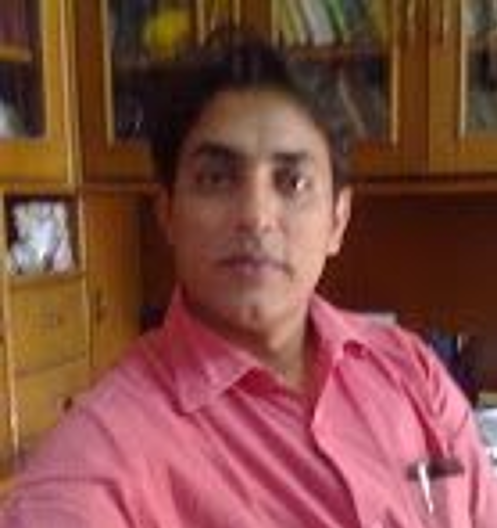

- Media
- New Media
- Modern Hindi Literature

Dr. Rakesh Kumar
Associate Professor, Department of Hindi

Contact Details
-
Address
- E-112 Aastha Kunj Apartments Sector-18, Rohini, Delhi – 110089
-
Phone
- Office: 011-24112557
- Residence: 011-27876159
- Mobile: 9899686959
-
Email
- rakeshpragya@gmail.com
Education
Career Profile
- B.A. (Hons.) Hindi Hindu College, University of Delhi 1992
- M.A. Hindi Hindu College, Department of Hindi, University of Delhi 1994
- M.Phil. Hindi Department of Hindi, University of Delhi 1995
- Ph.D. Hindi Department of Hindi, University of Delhi 2008
- M.A. (Mass Communication) Kurukshetra University, Kurukshetra 2013
- Post-Doctoral Research Department of Hindi, University of Delhi 2017
- Kirorimal College, University of Delhi - Lecturer (Temporary) - 1995
- Ramlal Anand College, University of Delhi - Associate Professor - 1996 onwards
Education
Career Profile
Subjects Taught
Research Guidance & Supervision
- Ph.D. Students: 4 Total
- Awarded: 2 Ph.D. degrees
- Submitted: 1 Ph.D. thesis
Conference Organization & Presentations
- Organized Seminar: "Naya Media Avsar aur chunautiyan" (New Media: Opportunities and Challenges) - Speaker: Satish K Singh - 25 August 2017
- Organized Seminar: "Vigyan ki Hindi aur Hindi Mein Vigyan" (Science in Hindi and Hindi in Science) - Speakers: Dr. Kuldeep Sharma, Dr. Devender Mewari - 25 November 2017
- Organized Two-Day Theatre Seminar & Workshop: 8-9 February 2018
Area of interest
Administrative Assignments
Areas of Interest / Specialization
- Media
- New Media
- Modern Hindi Literature
Administrative Assignments
- Anti Discrimination Officer
- Public Information Officer
- Liaison Officer
- Course Coordinator, Hindi Patrakarita Evam Jansanchar
Publications Profile
- Surdas (Edited) - Anany Prakashan, 2018
- Hamara Samay Sanskriti aur Naya Media - Anamika Publishers and Distributors, 2017
- Navlekhan aur Malayaj Ka Srijan Karm - Swaraj Prakashan Delhi, 2009
- Kavya Suman (Edited) - Department of Hindi, University of Delhi, 2006
- Adhunik Hindi Kavita - Department of Hindi, University of Delhi, 2004
- Nayepan Ki Avdhaarna - ShabdSandhan, 2010
- Dalit Rajniti Ki Samasyayen - VANI PRAKASHAN, 2004
- Rekhayen Bolti Hain - Shivna Sahityiki, 2018
- Naye Media Ne Badali Hindi Ki Chaal - Bahuvachan, 2018
- Majbooriyon ke samandar mein samanta ke dweep - Hans, 2017
- Naya Media: Naya Vishv Naya Parivesh - Shivna Sahityiki, 2017
- Adhoore Sapnon ki Sanghrsh Gatha - Paakhi, 2017
- Hindi aur Any Bhartiya Bhashayen Banaam Angrezi - Banasjan, 2014
- Vikas ka Sach Mantavy - 2014
- Nehru Yug KE Kuch Meethe Sapane aur Kuch Kadavi Sachchaiyan - Sablog, 2014
- Samkaleen Sandrbhon mein Media ke Parakh - Banasjan, 2013
- Mera Mujhamen Kuch Nahin: Ek Parichay - Kathan, 2013
- Zindagi se Ishq ki Gazalen - Naya Path, 2013
- Tanashahon ke Jaane ka Mausam: Aijaz Ahmad - Kathan, 2011
- Media Aur Bazarwaad - Vagarth, 2009
- Apane Samay ke Aaine mein - Kathan, 2008
- Vah Achcha Musalmaan Tha Varna - Vagarth, 2007
- Sahitya ko To Bazarvaad se Joojhna hi Hoga - Vagarth, 2007
- Narendra Sharma Ke Rachna Sansaar Se guzarte Hue - Apeksha, 2007
- Samkaleen Samaj Ke Saarthak Chitra - Apeksha, 2006
- Samaajvaad ka Sapana - Kathan, 2001
- Sudharvaad banaam amool Parivarthanvaad - Kathan, 2000
- Bedakhal - Kathan, 1999
- Kathan ke Pahle Dus Varsh - Kathan, 1999
Books (Text/Reference/Subject)
Book Chapters
Research Articles/Papers in Journals (22 Articles)
Awards and Distinctions
- UGC JRF Hindi - 1994
- NET Mass Communication - 2017
- Awarded by Dabur Ayurvet for contribution to the field of Journalism - 2018
Other Activities
- Member Academic Council, University of Delhi - 2008-2010
- Member Academic Council, University of Delhi - 2010-2012
- Member standing committee on academic matters - 2009
- Member admission committee Faculty of Management Studies, University of Delhi - 2009
- Member committee to consider better institutional solution for mentoring academically weak students (especially belonging to reserved categories) Faculty of Management Studies, University of Delhi - 2009
- Member admission committee Faculty of Arts, University of Delhi - 2011
- Member admission committee Faculty of Medical Sciences, University of Delhi - 2012
- Member standing committee students, University of Delhi - 2012
- Member syllabus committee of Hindi Patrakarita Evam Jansanchar
- Reviewed and presented many contemporary literary text for Aakashwani (AIR) Delhi